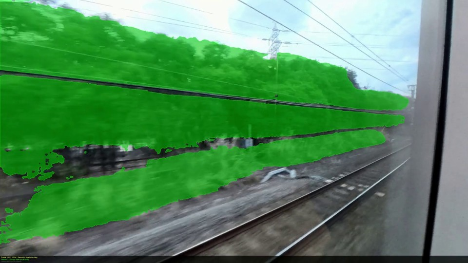
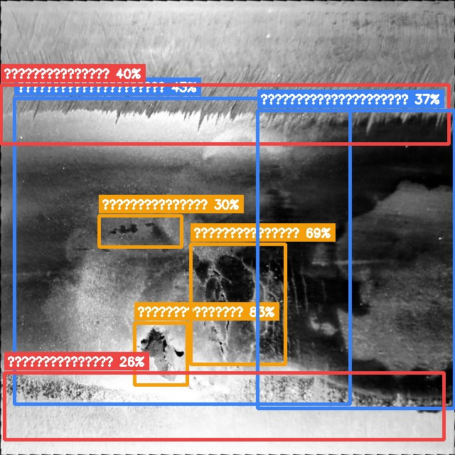

● カメラ映像 / Camera

jrsam3 — 11s
深度 + 異常検知 / Depth+Anomaly
DA V2 Large

DISTANCE
遠 / Far近 / Near
営業列車の前方カメラ1台で、毎運行ごとに全線を自動点検。 AIが軌道異常・建築限界支障・路面変形をリアルタイム検知します。
実際のJR路線映像（2路線 / 142フレーム）を Depth Anything V2 Large（RTX 4090 / 約40ms/フレーム）でリアルタイム処理した結果です。 フレームを選択して深度マップと異常検知結果を確認できます。
選択したフレームの深度データを3次元空間に変換。軌道前方の立体構造をあらゆる角度から確認できます。
導入後のリアルタイム監視画面のイメージです。全列車・全区間の点検データを一元管理します。
Depth Anything V2 Large を基盤とした鉄道専用の軌道点検エンジン。実証済みの推論パイプラインで量産対応可能。
既存の営業車両に搭載するだけ。特殊センサー不要。
深度推定と異常検知を組み合わせたマルチレイヤー解析。
保線担当者がすぐに使える形式で自動レポート生成。
営業列車 + 前方カメラだけで、専用検測車を超える点検頻度をコストの数分の一で実現します。
| 比較項目 | 従来（専用検測車） | RailScan AI |
|---|---|---|
| 初期費用 | 3〜10億円 検測車両導入・改造費 |
カメラ取付のみ 既存車両に後付け可 |
| 点検頻度 | 月1〜4回 深夜の専用ダイヤ必要 |
毎運行（1日30〜100回） 営業列車がそのまま検測車に |
| データ確認まで | 数日〜1週間 データ処理・報告書作成 |
リアルタイム 走行中に即時アラート通知 |
| 必要人員 | 専門チーム（5〜10名） 深夜作業・熟練技術者 |
最小限 確認作業のみ（AI が自動スクリーニング） |
| カバレッジ | 路線ごと順番に 優先路線のみ対応しがち |
全路線・全区間 車両が走るすべての区間を自動カバー |
| 深夜作業 | 必須（終電後） 運転士・保線員の負担大 |
不要 営業時間内に完結 |